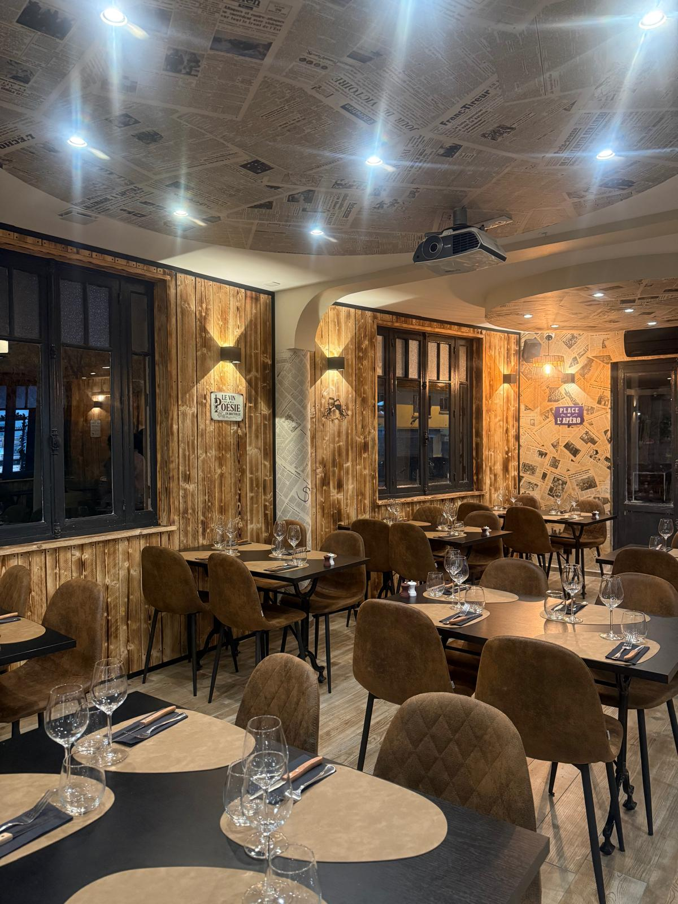
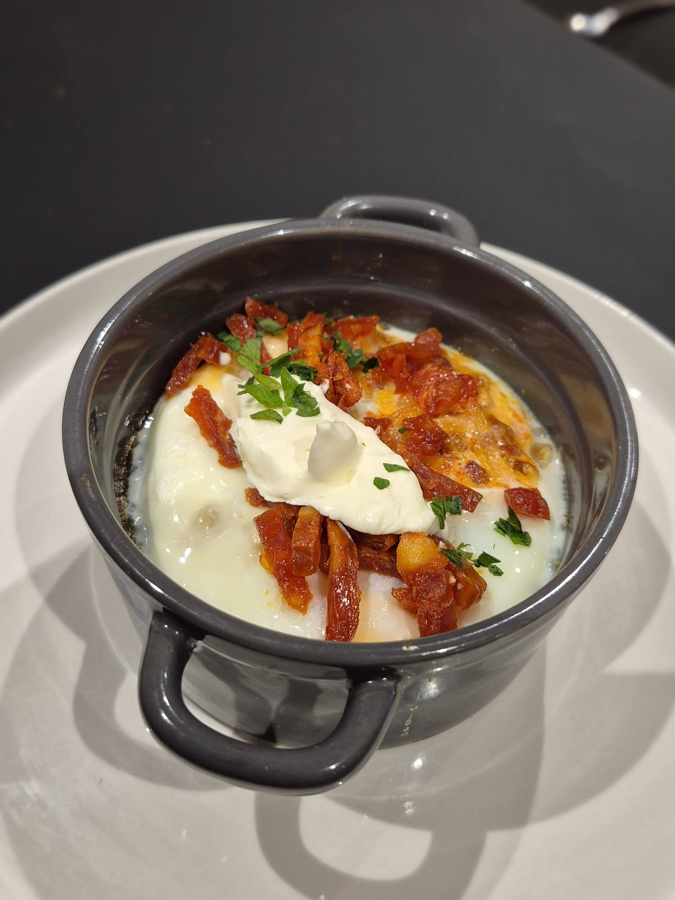
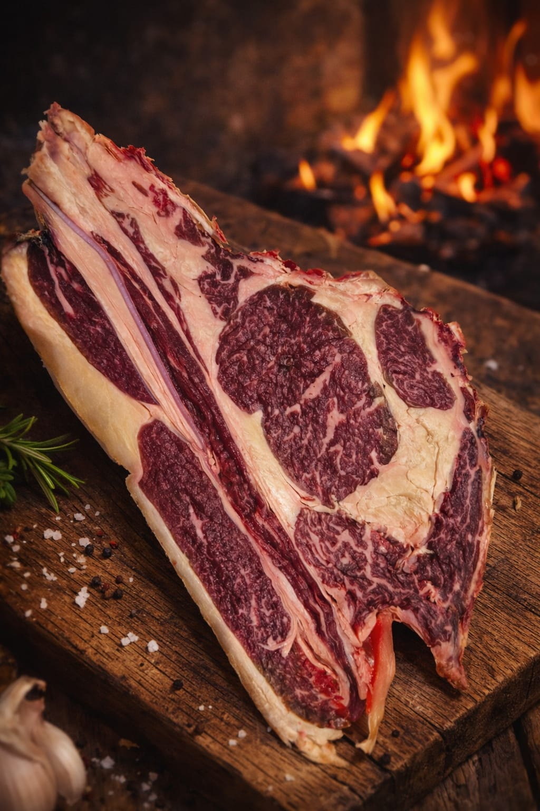
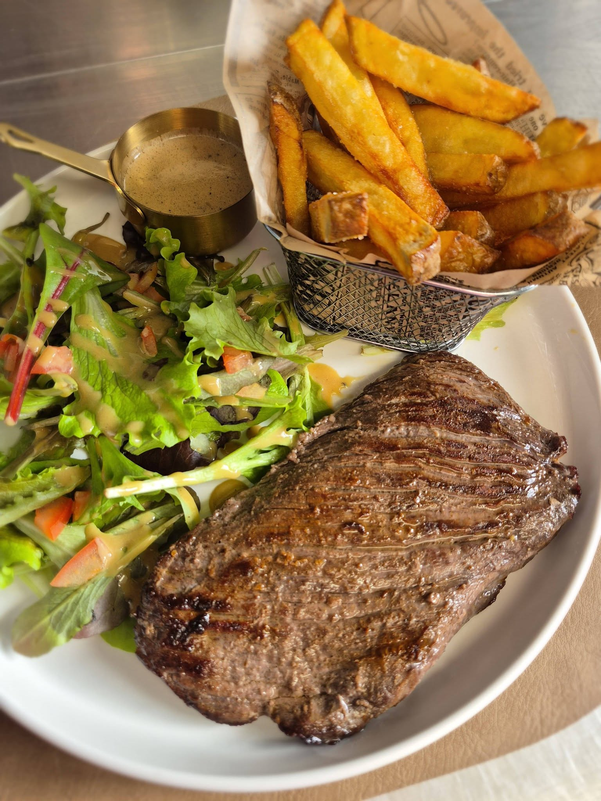

Notre histoire
Chez Nany,
C'est un endroit convivial et chaleureux.
Ce restaurant est bien plus qu'une ouverture de portes : c'est l'accomplissement d'un rêve de famille, né il y a de nombreuses années, et porté par notre amour profond pour la cuisine et la convivialité. Depuis longtemps, nous imaginions un lieu où l'on pourrait transmettre ce que la restauration nous apporte : du plaisir, des rencontres, et cette chaleur que seule une table partagée peut offrir.

Un héritage précieux
Mais ce qui nous a réellement donné la force de transformer ce rêve en réalité, c'est la perte de Nany, qui n'était pas seulement une femme exceptionnelle ou un repère : elle était le cœur battant de nos souvenirs , la gardienne des saveurs qui réconfortent, la voix douce qui disait toujours que la cuisine n'est belle que lorsqu'elle est faite avec amour. Elle nous a transmis bien plus que des recettes…
Elle nous a légué une façon de vivre : offrir, partager, rassembler. Aujourd'hui, chaque plat que nous préparons porte un peu d'elle. Chaque assiette raconte son histoire, son savoir-faire, sa générosité infinie. Ce restaurant est notre manière de continuer à faire vivre ce qu'elle nous a donné : des moments sincères, chaleureux, intenses, comme ceux qu'elle savait rendre si uniques autour d'une table. Ici, nous cuisinons avec le cœur : pour elle, pour vous. Pour perpétuer cette belle tradition de plaisir et de partage qu'elle nous a laissée. Nous sommes heureux de vous accueillir et de partager avec vous cette aventure culinaire pleine de goût , d'amour et de souvenirs.
Sonny, Jenny, Aurélia, Jonathan.

Notre viande
Ce restaurant est une cuisine traditionnelle francaise qui s'efforce de travailler des produits frais et de saison, sélectionnés avec de jolis accords mets et vins conseillés par notre sommelier, et une sélection de viandes maturées allant de 30 à 120 jours.
Dans notre cave de maturation, le temps devient un ingrédient à part entière. Chaque pièce de viande y repose lentement, affinée avec précision pour révéler toute la richesse de ses arômes, sa tendreté et sa profondeur en bouche.
Plus qu'une simple technique, la maturation est un art que nous maîtrisons avec exigence.

Notre sélection
Nous sélectionnons des races d'exception telles que l'Angus, l'Ibérico, la Simmental ou encore la Noire Baltique, reconnues pour leurs qualités et leur caractère unique. Chaque origine offre une signature gustative distincte, sublimée par un temps de maturation adapté allant de 30 à 120 jours selon la demande.
Nos prix évoluent naturellement en fonction de la durée de maturation et du morceau choisi, reflet du travail, de la patience et de l'intensité des saveurs développées.
Pour une expérience entièrement personnalisée, nos pièces sont présentées et découpées devant vous selon vos envies.
La viande est ensuite pesée à table avant cuisson, en toute transparence.
Ici, chaque pièce raconte une histoire, il ne vous reste plus qu'à la savourer.
N'hésitez pas à venir nous contempler.
